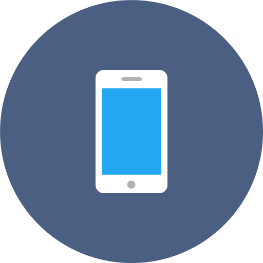
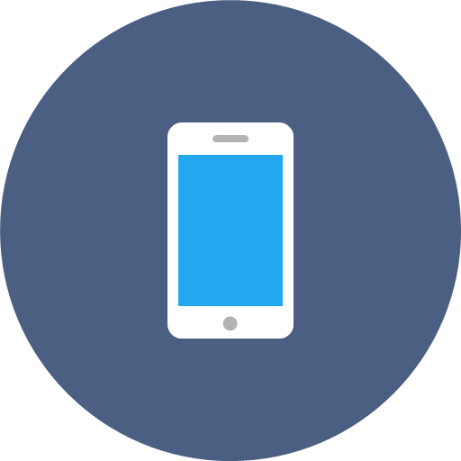

Recomendaciones de Seguridad
Tus archivos, fotos, videos, son tuyos.
Los celulares nunca serán seguros pero vale la pena intentarlo.
No permitas que los trolls espíen tus pensamientos y experiencias privadas.
"En honor a escritora, programadora informática, hacker estadounidense y creadora del término así como la asociación Cypherpunk encargada de la defensa de la privacidad digital. ."
Tus archivos, fotos, videos, son tuyos.
Los celulares nunca serán seguros pero vale la pena intentarlo.
No permitas que los trolls espíen tus pensamientos y experiencias privadas.
Un Kit de Herramientas para una Internet feminista de la periodista y activista Larissa Saud
Ver ManualEn este práctico manual, Larissa aborda el complejo problema de la privacidad en Internet, de la huella digital, el rastro de cada pequeña acción en el ciberespacio como realizar una búsqueda, utilizar aplicaciones, navegadores, y la infinidad de servicios digitales, muchos de ellos “gratuitos”, y cuyos términos y condiciones se aceptan sin leerlos. Asimismo, enfatiza la forma en cómo los atacantes aprovechan esos datos para agredir o cometer ciberdelitos.
De esta forma, invita a realizar un ejercicio propio como una forma de análisis de riesgo ¿Los datos que tienes en Internet (incluida la nube) son sensibles (orientación sexual, temas de salud, orientación religiosa)?, ¿Qué pasaría si los datos que difundes se perdieran?, ¿Qué pasaría si estuvieran a disposición de alguna persona a la que no hemos dado autorización?
Entonces, ofrece la información necesaria para desarrollar una estrategia de mitigación; brinda -en teoría y práctica- herramientas de software abierto para navegar de forma más segura en ordenadores y telefonía móvil.